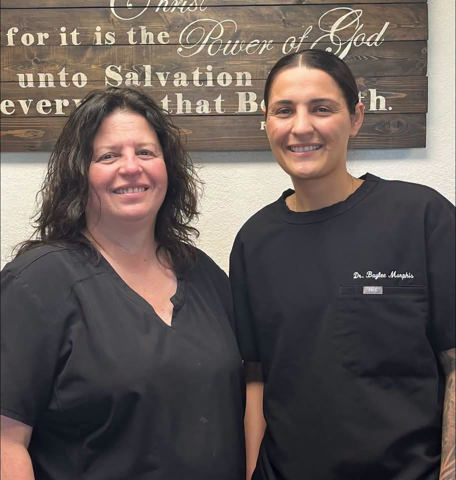

Morphis Veterinary Services, Inc.

Our Story
Morphis Veterinary Services, Inc. is a Christian, family-owned
practice serving Seminole, Oklahoma since 2018. We treat every
patient, and every pet owner, like family.
Meet the Vets
Dr. Laura Morphis
Dr. Laura Morphis is a 1996 graduate of Oklahoma State
University's veterinary program, bringing over 30 years of
experience to every patient she sees.
Dr. Baylee Morphis
Dr. Baylee Morphis, Dr. Laura's daughter, is a 2026 graduate of
Ross University School of Veterinary Medicine, carrying the
family's tradition of care into the next generation.